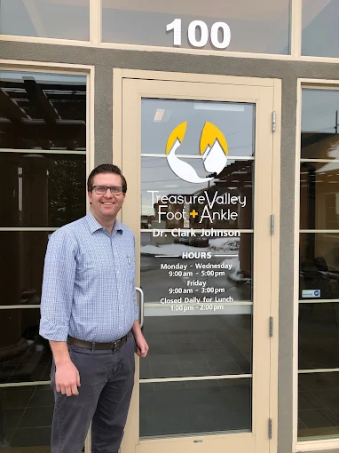

Board Certified Podiatric Surgeon
Combining expert medical training with genuine care for every patient.
Dr. Clark Johnson was born and raised on a cattle ranch in Durango, Colorado, where he learned the values of hard work, dedication, and caring for others. This rural upbringing gave him a deep appreciation for community and the importance of personalized care.
He completed his undergraduate studies at Brigham Young University in Provo, Utah, where he developed his passion for medicine and patient care. It was here that Dr. Johnson discovered his calling to help people overcome physical challenges and return to the activities they love.
Dr. Johnson received his Doctor of Podiatric Medicine degree at Des Moines University in Des Moines, Iowa, where he also earned a Master of Science degree in Anatomy. This dual-degree program gave him an exceptional foundation in both the clinical and scientific aspects of medicine.
He completed his specialized foot and ankle surgery training at the North Colorado Podiatric Medicine and Surgery residency, where he gained extensive experience in both conservative treatments and advanced surgical techniques.
As a Fellow of the American College of Foot and Ankle Surgeons (FACFAS), Dr. Johnson holds dual certification from the American Board of Foot and Ankle Surgery:
This dual certification represents the highest level of training and competency in foot and ankle surgery, allowing Dr. Johnson to provide comprehensive care for even the most complex conditions.
Dr. Johnson believes in taking the time to truly listen to each patient, understand their concerns, and develop personalized treatment plans that fit their lifestyle and goals. He takes a conservative approach when appropriate, always exploring non-surgical options first, while providing expert surgical care when needed.
"My goal is to help every patient get back to doing what they love, whether that's hiking in the foothills, playing with their grandchildren, or simply walking without pain. I treat every patient the way I would want my own family to be treated."
When he's not caring for patients, Dr. Johnson enjoys spending time outdoors with his family. He is married with three sons and one daughter, and together they enjoy hiking, horseback riding, fishing, snowboarding, and boating.
His love of outdoor activities gives him a personal understanding of why it's so important for his patients to stay active and mobile. He knows firsthand the frustration that comes with being sidelined by foot or ankle pain.
From common foot problems to complex surgical cases, Dr. Johnson provides comprehensive care for a wide range of conditions.
Schedule your appointment today and experience the difference that personalized, compassionate care can make.